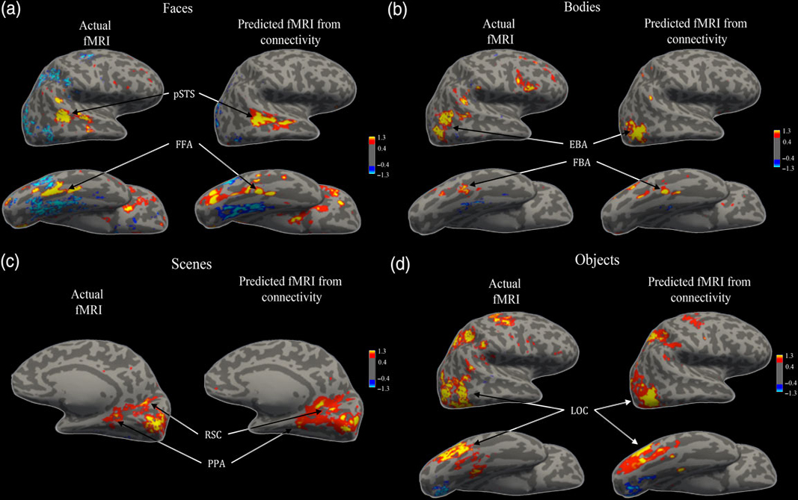
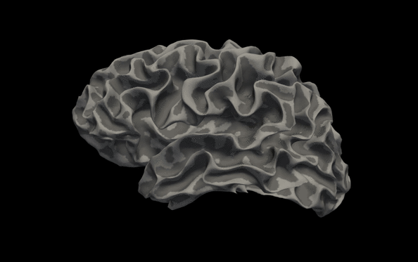
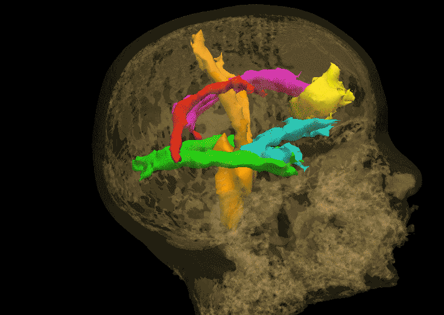
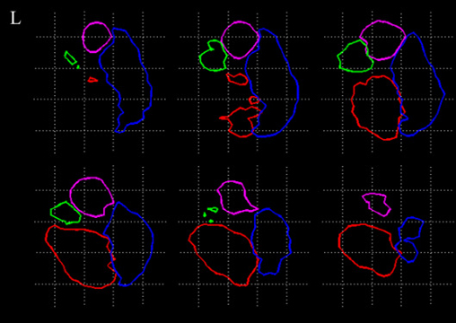
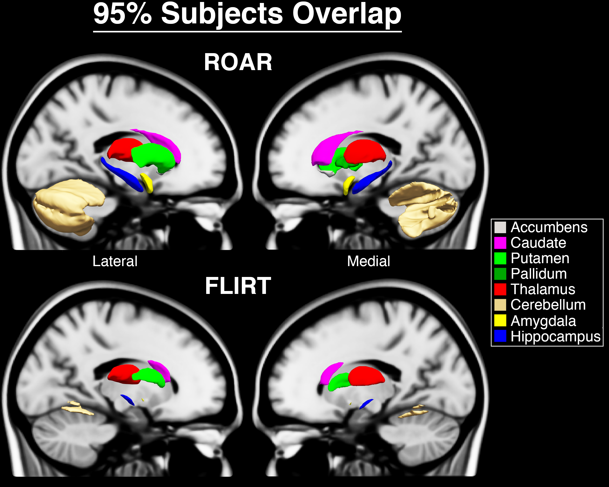

-

TractPred
Predict neural responses using connectivity alone -

SurfRender
Flexibly render brain surfaces -

TractRender
Render white matter pathways -

TractSeg
Segment neural structures using connectivity -

ROAR
Register subcortical structures to a template